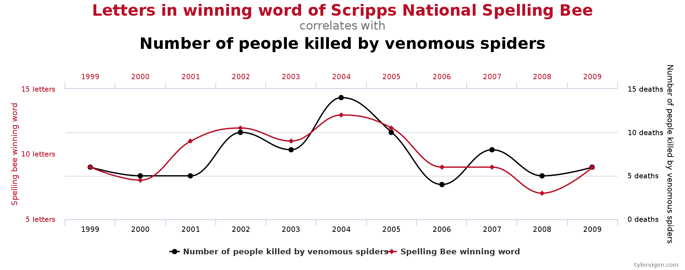

5 Multiple testing
5.1 Introduction to multiple testing
Consider the problem of assessing which variables in a GLM have nonzero coefficients. In the preceding chapters, we have described a variety of tests for obtaining \(p\)-values for each coefficient. Given this set of \(p\)-values (call them \(p_1\), , \(p_m\)), we must determine which variables to deem significant. As it turns out, this task is a nontrivial one for several reasons, the first of which is the multiplicity problem.
5.1.1 The multiplicity problem
When R prints a regression summary, it adds stars to variables based on their \(p\)-values. Variables with \(p\)-values below 0.05 get one star, those with \(p\)-values below 0.01 get two stars, and those with \(p\)-values below 0.001 get three stars. A natural strategy for selecting significant variables is to choose those with one or more stars. However, the issue with this strategy is that even null variables (those with coefficients of zero) will sometimes have small \(p\)-values by chance (Figure 5.1). The more total variables we are testing, the more of them will have small \(p\)-values by chance. This is the multiplicity problem.

To quantify this issue, consider the case when all \(m\) variables under consideration are null. Then, the chance that any one of them has a \(p\)-value below 0.05 is 0.05. So, the expected number of variables with one or more stars is \(0.05m\). For example, if we have 100 variables, then we expect to see 5 variables with stars on average, even though none of the variables are actually relevant to the response! The growth of the quantity \(0.05m\) with \(m\) confirms that the multiplicity problem grows more severe as the number of hypotheses tested increases.
Another way of thinking about the multiplicity problem is in the context of selection bias. The process of scanning across all variables and selecting those with small \(p\)-values is a selection event. Once the selection event has occurred, one must consider the null distribution of a \(p\)-value conditionally on the fact that it was selected. Since the selection event favors small \(p\)-values, the null distribution of a \(p\)-value conditional on selection is no longer uniform; it becomes skewed toward zero. Interpreting \(p\)-values (and their accompanying stars) “at face value” is misleading because it ignores the crucial selection step. Other terms for this include “data snooping” and “p-hacking.”
The multiplicity problem is not limited to regression. In the next two sections, we develop some definitions to describe the multiplicity problem more formally and generally.
5.1.2 Global testing and multiple testing
Suppose we have \(m\) null hypotheses \(H_{01}, \dots, H_{0m}\). Let $p_1, , \(p_m\) be the corresponding \(p\)-values.
Definition 5.1 A \(p\)-value \(p_j\) for a null hypothesis \(H_{0j}\) is valid if \[ \mathbb{P}_{H_{0j}}[p_j \leq t] \leq t \quad \text{for all } t \in [0, 1]. \tag{5.1}\]
This definition covers the uniform distribution, as well as distributions that are stochastically larger than uniform. Distributions of the latter kind are often obtained from resampling-based tests, such as permutation tests. In the remainder of this chapter, we will assume that all \(p\)-values are valid.
Given a set of \(p\)-values, there are several inferential goals potentially of interest. These can be subdivided first into global testing and multiple testing.
Definition 5.2 A global testing procedure is a test of the global null hypothesis \[ H_0 \equiv \bigcap_{j = 1}^m H_{0j}. \] In other words, it is a function \(\phi: (p_1, \dots, p_m) \mapsto [0,1]\). A global test has level \(\alpha\) if it controls the Type-I error at this level: \[ \mathbb{E}_{H_0}[\phi(p_1, \dots, p_m)] \leq \alpha. \tag{5.2}\]
A global testing procedure determines whether any of the null hypotheses can be rejected. In regression modeling, a global test would be a test of the hypothesis \(H_0: \beta_1 = \cdots = \beta_m = 0\).
Definition 5.3 A multiple testing procedure is a mapping from the set of \(p\)-values to a set of hypotheses to reject: \[ \mathcal{M}: (p_1, \dots, p_m) \mapsto \hat{S} \subseteq \{1, \dots, m\}. \]
A multiple testing procedure determines which of the null hypotheses can be rejected. In regression modeling, a multiple testing procedure would be a method for selecting which variables have nonzero coefficients, the problem we discussed in the beginning of this section.
5.1.3 Multiple testing goals
Let us define \[ \mathcal{H}_0 \equiv \{j \in \{1, \dots, m\}: H_{0j} \text{ is true}\} \quad \text{and} \quad \mathcal{H}_1 \equiv \{j \in \{1, \dots, m\}: H_{0j} \text{ is false}\}. \]
In other words, \(\mathcal{H}_0\) is the set of indices of the true null hypotheses, and \(\mathcal{H}_1\) is the set of indices of the false null hypotheses. There are two primary notions of Type-I error that multiple testing procedures seek to control: the family-wise error rate (FWER) and the false discovery rate (FDR).
5.1.3.1 Definitions of Type-I error rate and power
Definition 5.4 The family-wise error rate (FWER) of a multiple testing procedure \(\mathcal{M}: (p_1, \dots, p_m) \mapsto \hat{S}\) is the probability that it makes any false rejections: \[ \text{FWER}(\mathcal{M}) \equiv \mathbb{P}[\hat{S} \cap \mathcal{H}_0 \neq \varnothing]. \] A multiple testing procedure controls the FWER at level \(\alpha\) if \[ \text{FWER}(\mathcal{M}) \leq \alpha. \]
Definition 5.5 The false discovery proportion (FDP) of a rejection set \(\hat{S}\) is the proportion of these rejections that are false: \[ \text{FDP}(\hat{S}) \equiv \frac{|\hat{S} \cap \mathcal{H}_0|}{|\hat{S}|}, \quad \text{where} \quad \frac{0}{0} \equiv 0. \] The false discovery rate (FDR) of a multiple testing procedure \(\mathcal{M}: (p_1, \dots, p_m) \mapsto \hat{S}\) is its expected false discovery proportion: \[ \text{FDR}(\mathcal{M}) \equiv \mathbb{E}[\text{FDP}(\hat{S})] = \mathbb{E}\left[\frac{|\hat{S} \cap \mathcal{H}_0|}{|\hat{S}|}\right]. \tag{5.3}\] A multiple testing procedure controls the FDR at level \(q\) if \[ \text{FDR}(\mathcal{M}) \leq q. \]
Regardless of what error rate a multiple testing procedure is intended to control, we would like it to have high power: \[ \text{power}(\mathcal{M}) \equiv \mathbb{E}\left[\frac{|\hat{S} \cap \mathcal{H}_1|}{|\mathcal{H}_1|}\right]. \]
5.1.3.2 Relationship between the FWER and FDR
Note that the FWER is a probability, while the FDR is an expected proportion. This distinction is highlighted by using the different symbols \(\alpha\) and \(q\) for the nominal FWER and FDR levels, respectively. The FWER is a more stringent error rate than the FDR, because it can only be low if no false discoveries are made most of the time; the FDR can be low if false discoveries are a small proportion of the total number of discoveries most of the time.
Proposition 5.1 For any multiple testing procedure \(\mathcal{M}\), we have \(\text{FDR}(\mathcal{M}) \leq \text{FWER}(\mathcal{M})\). Therefore, a multiple testing procedure controlling the FWER at level \(\alpha\) also controls the FDR at level \(\alpha\).
Proof. \[ \text{FDR} \equiv \mathbb{E}\left[\frac{|\hat{S} \cap \mathcal{H}_0|}{|\hat{S}|}\right] \leq \mathbb{E}\left[\mathbbm{1}(|\hat{S} \cap \mathcal{H}_0| > 0)\right] \equiv \text{FWER}. \]
The FWER was the error rate of choice in the 20th century, when limitations on data collection permitted only small handfuls of hypotheses to be tested. In the 21st century, the internet and other new technologies permitted much larger-scale collection of data, leading to much larger sets of hypotheses being tested (e.g., tens of thousands). In this context, the less stringent FDR rate became more popular. In many cases, an initial large-scale FDR-controlling procedure is viewed as an exploratory analysis, whose goal is to nominate a smaller number of hypotheses for confirmation with follow-up experiments. The purpose of controlling the FDR in this context is to limit resources wasted on following up false leads.
5.2 Global testing
Recall that a global test is a test of the intersection null hypothesis \(H_0 \equiv \cap_{j = 1}^m H_{0j}\). Let us first examine the naive global test, which rejects if any of the \(p\)-values are below \(\alpha\): \[ \phi_{\text{naive}}(p_1, \dots, p_m) = \mathbbm{1}\left(p_j \leq \alpha \text{ for some } j = 1, \dots, m\right). \tag{5.4}\]
This test does not control the Type-I error. In fact, assuming the input \(p\)-values are independent, we have \[ \mathbb{E}_{H_0}[\phi_{\text{naive}}(p_1, \dots, p_m)] = 1-(1-\alpha)^m \rightarrow 1 \quad \text{as} \quad m \rightarrow \infty. \] This is a manifestation of the multiplicity problem discussed before. In this section, we will discuss two ways of adjusting for multiplicity in the context of global testing:
- Bonferroni test: Powerful against few strong signals.
- Fisher combination test: Powerful against many weak signals.
Each test is listed with the alternative against which it is powerful. Note that in the context of global testing and multiple testing, the alternative is a multivariate object. The main difference between the Bonferroni test and the Fisher combination test is how the signal (i.e., deviation from the null) is spread across the \(m\) hypotheses being tested. If the signal is highly concentrated in a few non-null hypotheses, then the Bonferroni test is better. If the signal is spread out over many non-null hypotheses, then the Fisher combination test is better.
5.2.1 Bonferroni global test (Bonferroni, 1936 and Dunn, 1961)
5.2.1.1 Test definition and validity
The motivation for the Bonferroni global test is to find the strongest signal among the \(p\)-values and reject the global null if this signal is strong enough. It makes sense that such a strategy would be powerful against sparse alternatives. We define the Bonferroni test via \[ \phi(p_1, \dots, p_m) \equiv \mathbbm{1}\left(\min_{1 \leq j \leq m} p_j \leq \alpha/m\right). \]
The Bonferroni global test rejects if any of the \(p\)-values cross the multiplicity-adjusted or Bonferroni-adjusted significance threshold of \(\alpha/m\). This test can be viewed as a modified version of the naive test (5.4), but with the significance threshold \(\alpha\) adjusted downward to \(\alpha/m\). The more hypotheses we test, the more stringent the significance threshold must be.
Proposition 5.2 The Bonferroni test controls the FWER at level \(\alpha\) for any joint dependence structure among the \(p\)-values.
Proof. We can verify the Type-I error control of the Bonferroni test via a union bound: \[ \mathbb{P}_{H_0}\left[\min_{1 \leq j \leq m} p_j \leq \alpha/m\right] \leq \sum_{j = 1}^m \mathbb{P}_{H_{0j}}\left[p_j \leq \alpha/m\right] = m \cdot \alpha/m = \alpha. \]
5.2.1.2 The impact of \(p\)-value dependence
While the Bonferroni global test is valid for arbitrary \(p\)-value dependence structures, the underlying union bound may be loose for certain dependence structures. In particular, the Bonferroni bound derived above is tightest for independent \(p\)-values. Intuitively, the smallest \(p\)-value has the highest chance of being small if each \(p\)-value has its own independent source of randomness. Mathematically, let us compute the Type-I error of the Bonferroni global test under independence: \[ \mathbb{P}_{H_0}\left[\min_{1 \leq j \leq m} p_j \leq \alpha/m\right] = 1 - (1-\alpha/m)^m \approx \alpha. \] Therefore, the Bonferroni test exhausts essentially its entire level under independence. On the other hand, under perfect dependence (i.e., \(p_1 = \cdots = p_m\) almost surely), the Bonferroni test is quite conservative: \[ \mathbb{P}_{H_0}\left[\min_{1 \leq j \leq m} p_j \leq \alpha/m\right] = \mathbb{P}_{H_{01}}\left[p_1 \leq \alpha/m\right] = \alpha/m. \] In this special case, the level is \(m\) times lower than it should be, because no multiplicity adjustment is needed if the \(p\)-values are perfectly dependent.
5.2.2 Fisher combination test (Fisher, 1925)
If, on the other hand, we expect the signal to be spread out over many non-null hypotheses, the valuable evidence against the alternative is missed if only the minimum \(p\)-value is considered. In such circumstances, the Fisher combination test may be more powerful than the Bonferroni global test.
5.2.2.1 Test definition and validity
The Fisher combination test is based on the observation that \[ \text{if } p \sim U[0,1], \quad \text{then} \quad -2\log p \sim \chi^2_2. \] Therefore, if \(p_1, \dots, p_m\) are independent uniform random variables, then we have \[ -2\sum_{j = 1}^m \log p_j \sim \chi^2_{2m}. \] This leads to the Fisher combination test: \[ \phi(p_1, \dots, p_m) \equiv \mathbbm{1}\left(-2\sum_{j = 1}^m \log p_j \geq \chi^2_{2m}(1-\alpha)\right). \tag{5.5}\]
Proposition 5.3 The Fisher combination test controls Type-I error at level \(\alpha\) (5.2) if the \(p\)-values are independent.
Proof. Under the null, the \(p\)-values are stochastically larger than uniform (5.5). Therefore, \(-2\sum_{j = 1}^m \log p_j\) is stochastically larger than \(\chi^2_{2m}\), from which the conclusion follows.
5.2.2.2 Discussion
The Fisher exact test has a similar flavor to another chi-squared test. Suppose \(X_j \sim N(\mu_j, 1)\), and we would like to test \(H_j: \mu_j = 0\). Under the global null, we have \[ \text{if } X_1, \dots, X_m \overset{\text{i.i.d.}}\sim N(0,1), \text{ then } \sum_{j = 1}^m X_j^2 \sim \chi^2_m. \tag{5.6}\] It turns out that the tests based on (5.5) and (5.6) are quite similar. This helps us build intuition for what the Fisher combination test is doing: it’s averaging the strengths of the signal across hypotheses.
The independence assumption of the Fisher combination test makes it significantly less broadly applicable than the Bonferroni global test. However, one common application of the Fisher combination test is meta-analysis: the combination of information across multiple studies of the same hypothesis (or very related hypotheses). In this setting, the \(p\)-values are independent across studies, and the Fisher combination test is a natural choice because the strength of the signal is roughly the same across studies since they are studying very related hypotheses.
5.3 Multiple testing
Here we present one method each for FWER and FDR control.
5.3.1 The Bonferroni procedure for FWER control
We discussed the Bonferroni test for the global null. This test can be extended to an FWER-controlling procedure:
\[ \hat S \equiv \{j: p_j \leq \alpha/m\} \tag{5.7}\]
Proposition 5.4 The Bonferroni procedure controls the FWER at level \(\alpha\) for arbitrary \(p\)-value dependence structures.
Proof. We have
\[ \mathbb{P}[\hat S \cap \mathcal H_0 \neq \varnothing] = \mathbb{P}\left[\min_{j \in \mathcal H_0} p_j \leq \alpha/m\right] \leq \sum_{j \in \mathcal H_0} \mathbb{P}[p_j \leq \alpha/m] = \frac{|\mathcal H_0|}{m}\alpha \leq \alpha. \]
This completes the proof.
Note that the FWER is actually controlled at the level \(\frac{|\mathcal H_0|}{m}\alpha \leq \alpha\), making the Bonferroni test conservative to the extent that \(|\mathcal H_0| < m\). The null proportion \(\frac{|\mathcal H_0|}{m}\) has such an effect on the performance of many multiple testing procedures. Not all global tests can be extended to FWER-controlling procedures in this way. For example, the Fisher combination test does not single out any of the hypotheses, as it only aggregates the \(p\)-values. By contrast, the Bonferroni test searches for \(p\)-values that are individually very small, allowing it to double as an FWER-controlling procedure.
5.3.2 The Benjamini-Hochberg procedure for FDR control
Designing procedures with FDR control, as well as verifying the latter property, is typically harder than for FWER control. It is harder to decouple the effects of the individual hypotheses, as the denominator \(|S|\) in the FDR definition (5.3) couples them together. Both the FDR criterion and the most popular FDR-controlling procedure were proposed by Benjamini and Hochberg in 1995.
5.3.2.1 Procedure
To define the BH procedure, consider thresholding the \(p\)-values at \(t \in [0,1]\). We would expect \(\mathbb{E}[|\{j: p_j \leq t\} \cap \mathcal H_0|] = |\mathcal H_0|t\) false discoveries among \(\{j: p_j \leq t\}\). Since \(|\mathcal H_0|\) is unknown, we can bound it from above by \(mt\). This leads to the FDP estimate:
\[ \widehat{\text{FDP}}(t) \equiv \frac{mt}{|\{j: p_j \leq t\}|} \tag{5.8}\]
The BH procedure is then defined via:
\[ \hat S \equiv \{j: p_j \leq \widehat t\}, \quad \text{where} \quad \widehat t = \max\{t \in [0,1]: \widehat{\text{FDP}}(t) \leq q\} \tag{5.9}\]
In words, we choose the most liberal \(p\)-value threshold for which the estimated FDP is below the nominal level \(q\). Note that the set over which the above maximum is taken is always nonempty because it at least contains 0: \(\widehat{\text{FDP}}(0) = \frac{0}{0} \equiv 0\).
5.3.2.2 FDR control under independence
Benjamini and Hochberg established that their procedure controls the FDR if the \(p\)-values are independent. Here we present an alternative argument due to Storey, Taylor, and Siegmund (2004).
Proposition 5.5 The BH procedure controls the FDR at level \(q\) assuming that the \(p\)-values are independent.
Proof. We have
\[ \begin{split} \text{FDR} &= \mathbb{E}\left[\text{FDP}(\widehat t)\right] = \mathbb{E}\left[\frac{|\{j \in \mathcal H_0: p_j \leq \widehat t\}|}{|\{j: p_j \leq \widehat t\}|}\right] \\ &= \mathbb{E}\left[\frac{|\{j \in \mathcal H_0: p_j \leq \widehat t\}|}{m \widehat t}\widehat{\text{FDP}}(\widehat t)\right] \leq q \cdot \mathbb{E}\left[\frac{|\{j \in \mathcal H_0: p_j \leq \widehat t\}|}{m \widehat t}\right]. \end{split} \]
To prove that the last expectation is bounded above by 1, note that
\[ M(t) \equiv \frac{|\{j \in \mathcal H_0: p_j \leq t\}|}{m t} \tag{5.10}\]
is a backwards martingale with respect to the filtration
\[ \mathcal F_t = \sigma(\{p_j: j \in \mathcal H_1\}, |\{j \in \mathcal H_0: p_j \leq t'\}| \text{ for } t' \geq t), \tag{5.11}\]
with \(t\) running backwards from 1 to 0. Indeed, for \(s < t\) we have
\[ \mathbb{E}[M(s)|\mathcal F_t] = \mathbb{E}\left[\left.\frac{|\{j \in \mathcal H_0: p_j \leq s\}|}{m s} \right| \mathcal F_t\right] = \frac{\frac{s}{t}|\{j \in \mathcal H_0: p_j \leq t\}|}{m s} = \frac{|\{j \in \mathcal H_0: p_j \leq t\}|}{m t} = M(t). \]
The threshold \(\widehat t\) is a stopping time with respect to this filtration, so by the optional stopping theorem, we have
\[ \mathbb{E}\left[\frac{|\{j \in \mathcal H_0: p_j \leq \widehat t\}|}{m \widehat t}\right] = \mathbb{E}[M(\widehat t)] \leq \mathbb{E}[M(1)] = \frac{|\mathcal H_0|}{m} \leq 1. \]
This completes the proof.
5.3.2.3 FDR control under dependence
Under dependence, the BH procedure’s FDR can be bounded by a multiple of the nominal FDR level.
Proposition 5.6 The BH procedure controls the FDR at level \(q(1 + \frac{1}{2} + \cdots + \frac{1}{m})\) regardless of the \(p\)-value dependency structure.
Proof. We have
\[ \begin{split} \text{FDP}(\hat S) &= \sum_{k = 1}^m \frac{|\hat S \cap \mathcal H_0|}{k}\mathbbm{1}(|\hat S| = k) \\ &= \sum_{k = 1}^m \sum_{j \in \mathcal H_0} \frac{1}{k}\mathbbm{1}(j \in \hat S, |\hat S| = k) \\ &= \sum_{k = 1}^m \sum_{j \in \mathcal H_0} \frac{1}{k}\mathbbm{1}\left(p_j \leq \frac{qk}{m}, |\hat S| = k\right) \\ &\leq \sum_{j \in \mathcal H_0} \sum_{l = 1}^m \frac{1}{l} \mathbbm{1}\left(p_j \in \left[\frac{q(l-1)}{m}, \frac{ql}{m}\right]\right). \end{split} \]
It follows that
\[ \text{FDR} = \mathbb{E}[\text{FDP}(\hat S)] \leq \frac{|\mathcal H_0|}{m}q\left(1 + \frac{1}{2} + \cdots + \frac{1}{m}\right). \]
This completes the proof.
5.3.3 Additional topics
5.3.3.1 Weighted multiple testing procedures
Sometimes, we may have more prior evidence against certain null hypotheses than others, which we wish to incorporate in the global testing or multiple testing procedure to boost power. A common approach to doing so is to weight the \(p\)-values. Letting \(w_1, \dots, w_m\) be \(p\)-value weights averaging to 1, define weighted \(p\)-values \(\tilde{p}_j\) via:
\[ \tilde{p}_j \equiv \frac{p_j}{w_j} \tag{5.12}\]
Note that \(p\)-values corresponding to hypotheses with large (small) weights will be made more (less) significant. We can then attempt to apply the above global testing and multiple testing procedures on the weighted \(p\)-values \(\tilde{p}_j\) rather than the original \(p\)-values \(p_j\). As it turns out, in many cases these weighted procedures retain the Type-I error guarantees of their unweighted counterparts.
Proposition 5.7 The weighted variants of the Bonferroni global test, the Bonferroni FWER procedure, and the BH FDR procedure all control their respective Type-I error rates under the same conditions as their unweighted counterparts (arbitrary dependence for the Bonferroni procedures and independence for BH).
Proof. Here, we prove the statement just for the Bonferroni global test; the remaining proofs are left as exercises. The weighted Bonferroni global test is as follows:
\[ \phi(p_1, \dots, p_m) \equiv \mathbbm{1}\left(\min_{1 \leq j \leq m} \frac{p_j}{w_j} \leq \frac{\alpha}{m}\right). \]
It follows that
\[ \mathbb{E}_{H_0}[\phi(p_1, \dots, p_m)] \leq \sum_{j = 1}^m \frac{\alpha}{m} w_j = \alpha. \]
The last equality follows from the fact that the weights \(w_j\) average to 1 by assumption.
This completes the proof.